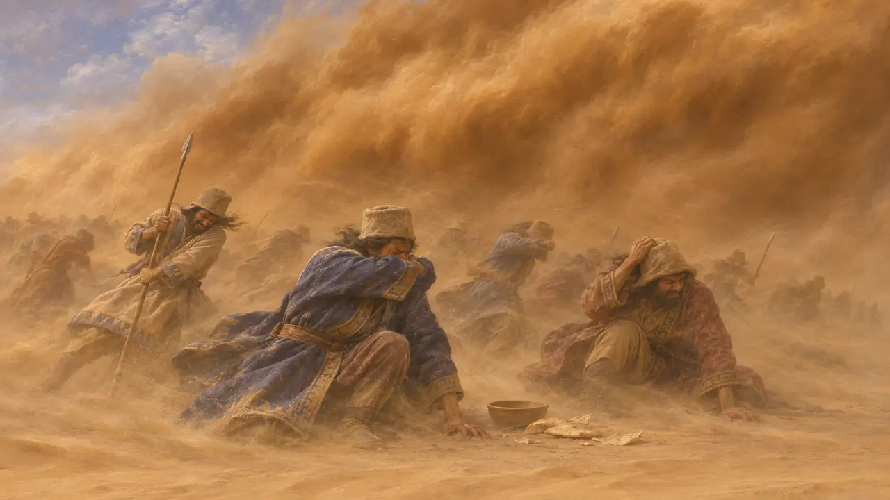
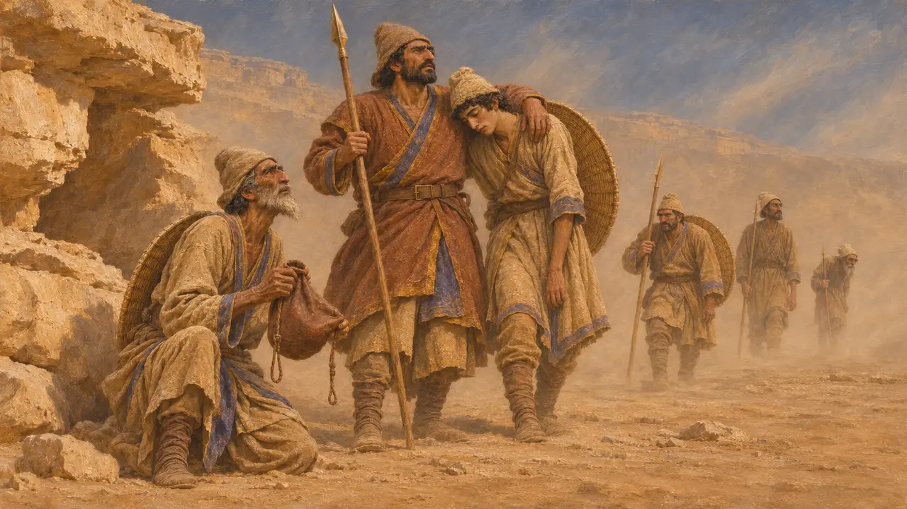
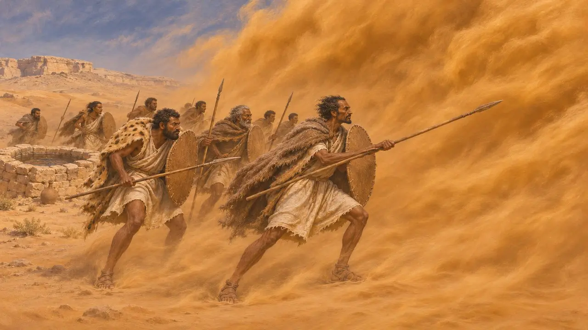
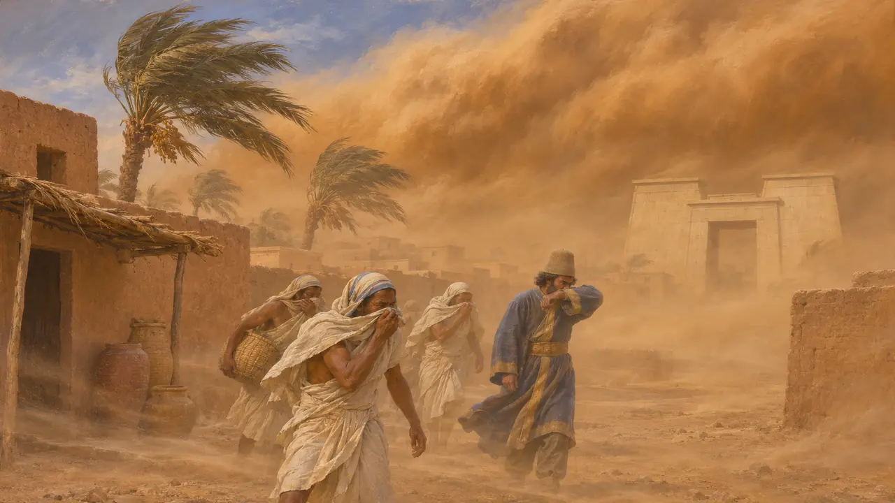

Encyclopédie › Faune et climat

Tempêtes de sable
Les vents de désert chargés de poussière à Memphis et à Suse, et le récit de l'armée perdue de Cambyse, vers 525 av. J.-C.
Dans le jeu : Niveau 2 : Le Porte-lance, Niveau 5 : La Charte
Les fronts de sable et de poussière portés par le vent sont un danger régulier au printemps en Égypte et dans les plaines sèches du Khouzestan. Le récit antique le plus célèbre à ce sujet est celui d'Hérodote : une armée perse envoyée par Cambyse contre l'oracle d'Ammon aurait été ensevelie dans le désert. Les historiens doutent de l'histoire telle qu'elle est racontée, mais elle a façonné la manière dont les lecteurs grecs se représentaient la puissance perse face au désert.
Dans le jeu : Le jeu montre un front de tempête de sable traversant la carte à Memphis durant les mois du khamsin, et à Suse dans les poussières de son été, assombrissant la journée. Il n'est qu'un décor et ne change aucune règle.

Hérodote sur l'armée perdue
Récit antiqueHérodote dit que Cambyse envoya depuis Thèbes d'Égypte une troupe contre l'oracle d'Ammon. Il rapporte ce que les Ammoniens lui ont raconté : l'armée avait parcouru environ la moitié du désert quand, au moment où les hommes prenaient leur repas de midi, un violent vent du sud les ensevelit sous le sable. Selon Hérodote, l'armée n'atteignit jamais l'oasis et ne revint jamais.
Herodotus 3.25-26

Si l'armée fut ensevelie
ContestéLes historiens modernes doutent du récit tel qu'il est rapporté. Les distances en jeu, l'absence de tout témoignage contemporain sur une telle armée et l'habitude grecque de transformer les catastrophes en leçons morales pèsent tous contre lui. Certains historiens suggèrent que la troupe a probablement péri de soif, dans une embuscade ou face à une résistance locale, le sable étant avancé après coup comme explication. Les affirmations selon lesquelles ses restes auraient été découverts dans le désert occidental n'ont pas été largement acceptées.
P. Briant, From Cyrus to Alexander, 2002

Les Psylles et le vent du sud
Légende tardiveHérodote parle aussi des Psylles, un peuple de Libye. Il raconte que leurs citernes furent asséchées par le vent du sud, qu'ils partirent donc en guerre contre lui, et que le vent les ensevelit sous le sable. Il le donne comme ce que disent les Libyens, et cela se lit comme un conte sur l'orgueil humain face au désert.
Herodotus 4.173

La poussière à Memphis et à Suse
ContestéLes vents de printemps venus du désert en Égypte et la poussière d'été au Khouzistan sont bien connus grâce aux relevés climatiques modernes. Pour l'époque perse, les sources conservées ne disent presque rien des tempêtes de poussière dans l'une ou l'autre ville. Y placer des tempêtes dans le jeu repose donc sur le climat actuel, et non sur ce qu'un fonctionnaire perse ou un auteur grec aurait consigné.
Herodotus 3.25-26
Sources
- Herodotus 3.25-26
- Herodotus 4.173
- P. Briant, From Cyrus to Alexander, 2002